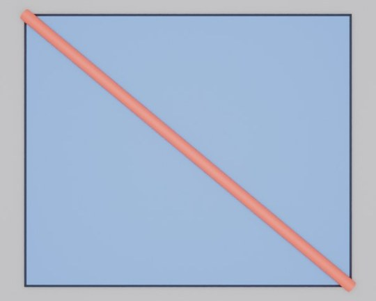
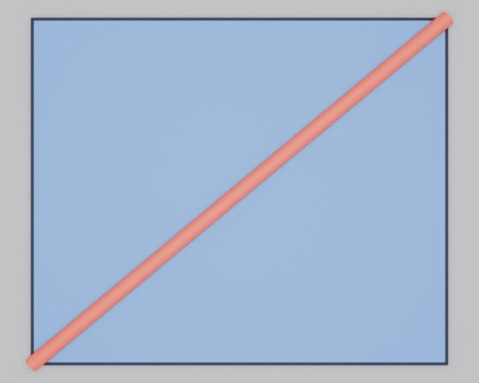

Bonus lesson
Rotate Edge
Rotating an edge clockwise (CW) or counterclockwise (CCW) spins an edge between two faces around their vertices. The manual calls this very useful for restructuring a mesh's topology. In Edit Mode, find it under Edge › Rotate Edge CW and Rotate Edge CCW.


How it works
The tool works on selected edges, or on the shared edge between selected faces. Using Rotate Edge CW or CCW on a pair of selected faces gives exactly the same result as selecting their common edge.
If you select faces, they must be adjacent pairs. Otherwise Blender shows the error "Could not find any selected edges that can be rotated".
Read the manual page on Rotate Edge.
Try it
This exercise is our own suggestion and has not been run step by step in the GUI. Add a plane, enter Edit Mode and press Ctrl+T to triangulate it. In Edge select mode, select the diagonal edge and choose Edge › Rotate Edge CW. Use Ctrl+Z to undo.